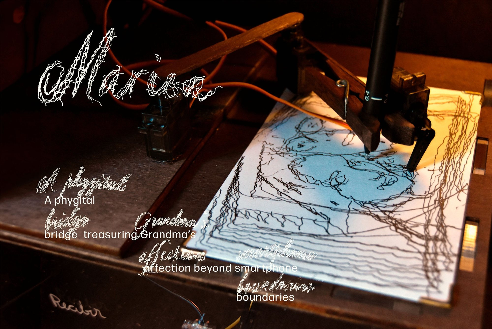
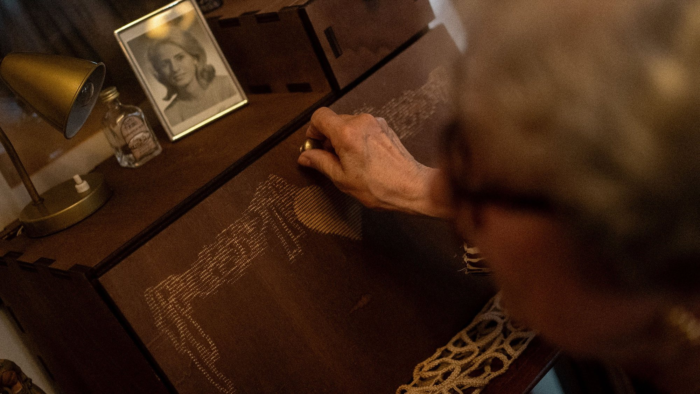
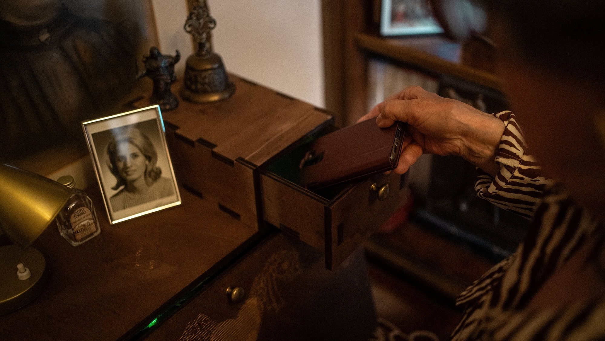
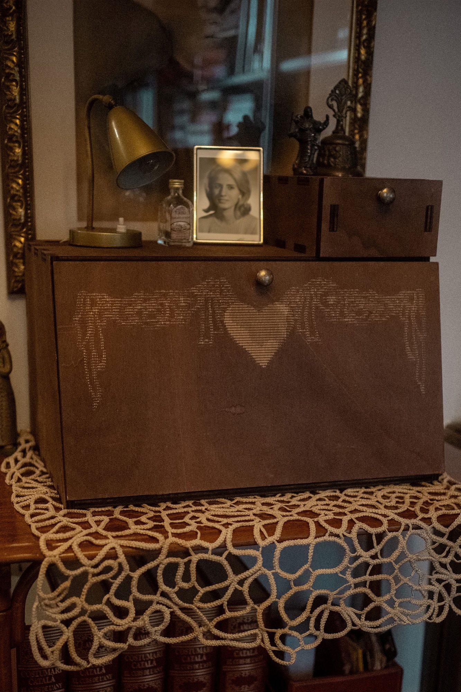
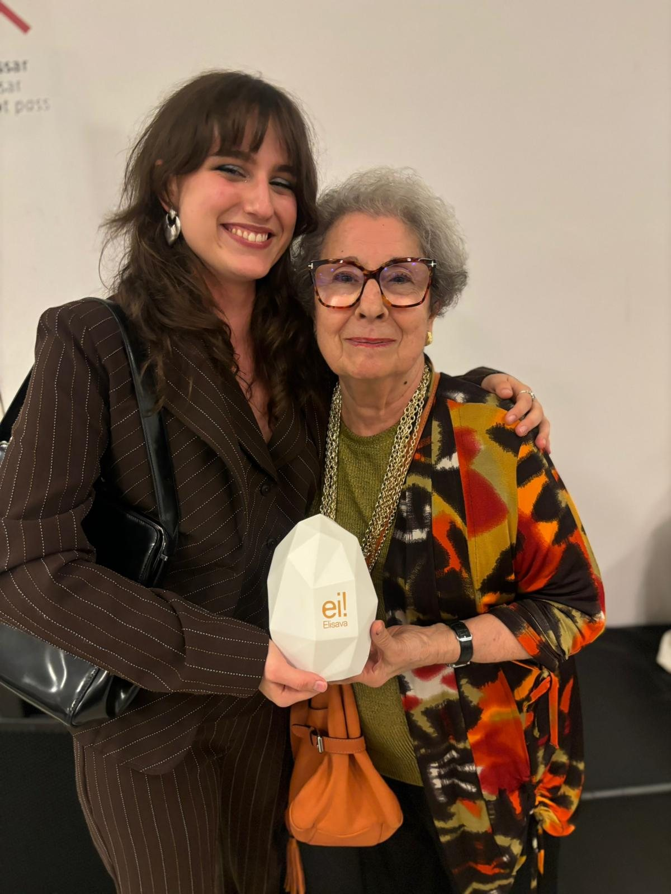

1. Marisa
A phygital bridge treasuring grandma’s affection beyond smartphone boundaries.



Although my grandma and I have very different ways of interacting with our smartphones, we both have anxieties provoked by these devices. Even so, we deal with them pursuing the goal that these technologies promise to fulfill: keeping us connected with those we love.
However, these anxieties reflect in the design of these digital spaces a will to prioritize retaining us in interaction over reaching our goal. From interaction design, we wonder how a device can be generated that allows us to transmit our affection, moving away from the smartphone, its problems, and third-party interests. For this purpose, autoethnography has been used to understand the relationship between users and their smartphones, their bond, and how it is transferred to the digital environment.
We present a pair of desks that allow users to send letters to each other instantly, using a webcam to capture them and a robotic arm to write them, but only if they have left their smartphone in an exterior drawer. This device represents a fusion between the analog and the digital where we are fully aware of the interaction we carry out, being the only beneficiaries of it, gaining agency over our relationship.


This project has resulted in a pair of cabinets, but it has gone much further, as it was only possible thanks to extensive research carried out hand in hand with my grandma. Together, we explored how different technologies have shaped our lives and how smartphones are affecting our relationships today. This is why I believe that the entire research process is as important as the final "product" presented. I'm working on publishing the full research in some way so you can review it. In the meantime, you can watch the video below, which showcases my grandma's thoughts and excerpts from the investigation. If you're interested in learning how the electronics work for the desk, how to build it, or how to reinterpret it, you can check out the repository I created during the building process here.

This project was awarded with an ei! award as the best project inside the interactive design category.
Final degree project
ELISAVA’s Interaction Design degree, 2024
Work by Marta Pou de Avilés.
ELISAVA’s Interaction Design degree, 2024
Work by Marta Pou de Avilés.